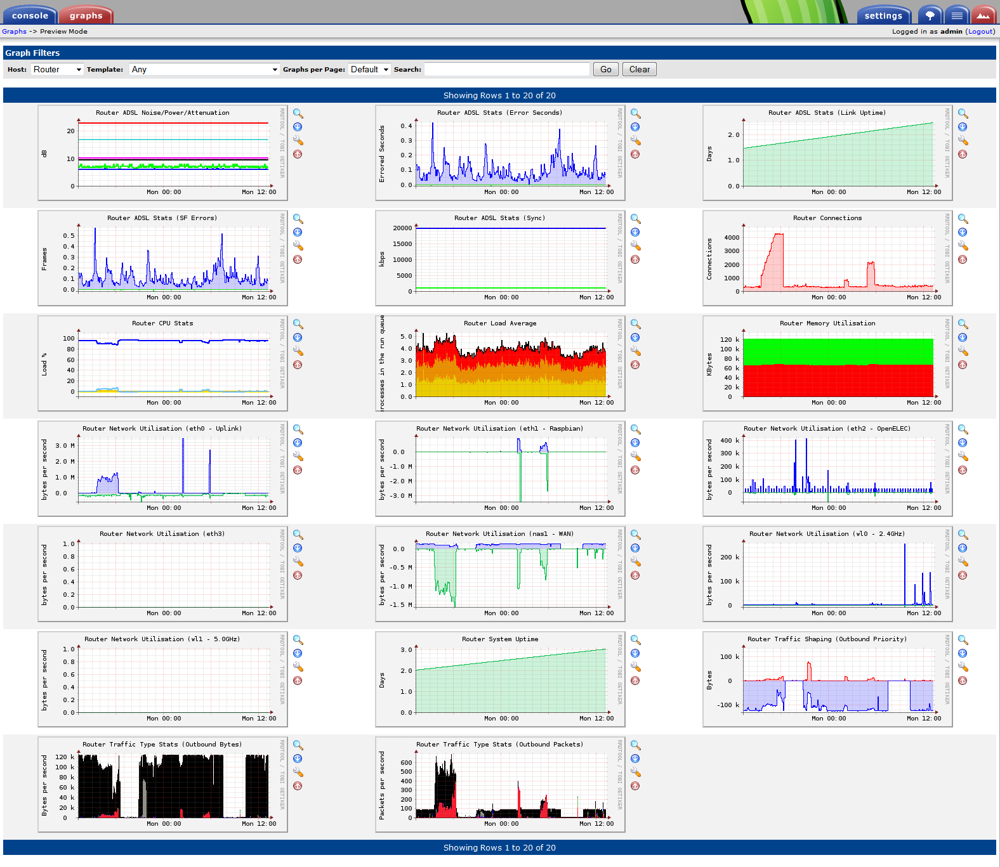
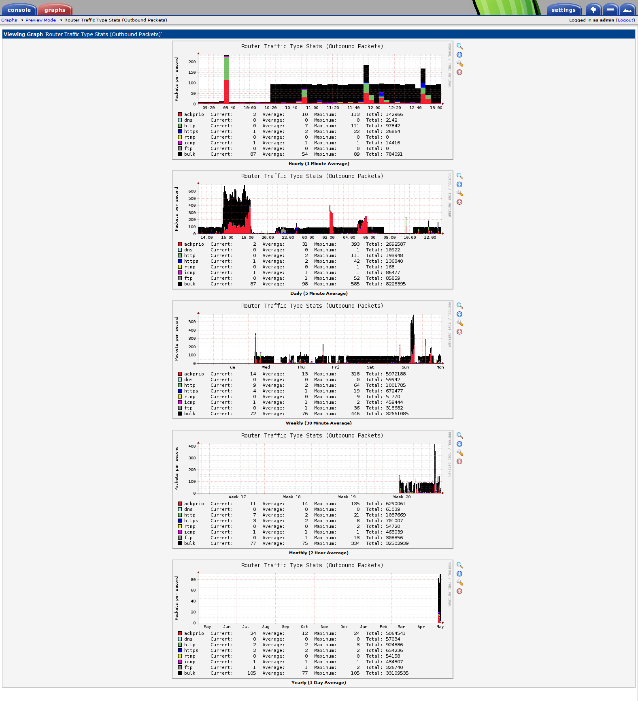

Additional reading:
Customizing your Netgear DGN2200v3
has many useful tips and pre-built binaries.
A Practical Guide to Linux Traffic Control
HTB Linux queuing discipline manual
cover the basics of traffic shaping.
I've compiled a few extra iptables modules and enabled (what I consider) to be improved QoS with TCP ACK prioritisation and traffic shaping for http, https, ftp, dns, rtmp (Flash/BBC iPlayer) and icmp traffic, with all other traffic being classified as "bulk" or lower priority.
In addition, I've cobbled together a simple server to expose various SNMP-type statistics for consumption by Cacti/MRTG etc.
Although the procedures described here have been tested on a DGND4000 aka N750 router, much of it should also apply to other MIPS/Broadcom-based Netgear routers of a similar vintage (eg. DGN2200 etc.)
The files and sources are all here, and also on github - please open an issue on github if you have any questions or suggestions.
DISCLAIMER: I take no responsibility if you brick your router, or if it sets your house on fire (etc.)
http://<router_ip>/setup.cgi?todo=debug
Add config.sh to /usr/custom with the following commands:
mount -n -o remount,rw / mkdir /usr/custom wget http://www.nmacleod.com/public/netgear_bin/config.sh -O /usr/custom/config.sh chmod +x /usr/custom/config.sh
/bin/cp /usr/custom/* /home
Your /usr/etc/rcS should now look something like the following:
# more /etc/rcS #!/bin/sh export PATH=/sbin:/bin:/usr/sbin:/usr/bin:/usr/sbin/scripts UTC=yes mount -n -t proc proc /proc mount -n -t sysfs sysfs /sys mount -n -t ramfs ramfs /home mount -n -t ramfs ramfs /tmp mount -n -t ramfs ramfs /mnt mount -n -t ramfs ramfs /dev mkdir /dev/pts mount -t devpts devpts /dev/pts # build var directories /bin/mkdir -m 0777 /tmp/var /bin/mkdir -m 0777 /var/lock /bin/mkdir -m 0777 /var/log /bin/mkdir -m 0777 /var/run /bin/mkdir -m 0777 /var/tmp /bin/mkdir -m 0777 /var/w /bin/mkdir -m 0777 /tmp/etc /bin/mkdir -m 0755 /etc/dnrd #/bin/mkdir -m 0777 /tmp/mnt /bin/mkdir -m 0777 /mnt/shares /bin/mkdir -m 0777 /var/run/bftpd /bin/mkdir -m 0777 /tmp/nv /bin/mkdir -m 0777 /tmp/w # install custom router updates /bin/cp /usr/custom/* /home /bin/cp -a /usr/etc/* /etc /bin/cp -a /usr/dev/* /dev/
Now, when the router boots, it will copy the contents of /usr/custom to /home.
[ $pppIF = ppp1 ] && /home/config.sh verbose "$@" &
Now, whenever the ppp1 interface (ie. the WAN connection) is brought up, /etc/ppp/ip-up will execute /home/config.sh.
When executed, /home/config.sh will wait until an internet connection is established before downloading any of the required kernel modules and other scripts.
Of course you can also download these files beforehand and store them in /usr/custom, in which case nothing will need to be downloaded.
Log output from /home/config.sh is visible at http://<router_ip>/ppp_log although note that the log will only be written once the WAN connection is established, which can take several minutes.
Once all of the required files are present in /home, they will be executed in turn as described below.
This script kills various unnecessary background processes to free available memory and reduce CPU load, while also bumping up several network settings so that the router may handle more connections and achieve better throughput.
This script uses additional iptables kernel modules and tc (traffic control) to prioritise TCP ACK replies, while also classifying various types of traffic into high and low priority classes.
The trafficshaper.sh script needs to know the maximum upstream capacity of the connection (in kbit/s) and how much is to be allocated to the high priority class, with the remainder being allocated to the low priority class.
The default is for a 1000kbit upstream connection (on interface ppp1) split 450kbit to high priority, and the remainder (550kbit) to low priority.
You can specify your own settings with the c parameter, eg. c ppp1 1000 450 550 would replicate the default settings.
See here, here and here for more details on traffic shaping.
This binary will be started as a daemon (ie. running forever), accepting command requests on port 5001 and responding with the results and is used to implement a poor man's snmp monitoring tool.
Use /home/njmserver in conjunction with snmp.py running on a local PC (or Raspberry Pi) to collect the real-time values of various router "sensors".
This information could have been collected using telnet, but this seemed more efficient and reliable. Be aware that the server accepts non-authenticated requests, which for the paranoid could be considered a security risk, however it only listens on your LAN interfaces which should be relatively secure.
Two P2P related processes are repeatedly re-started by /usr/sbin/rc, possibly as a result of the /usr/sbin/rc schedule restart cron entry that is run every day at 00:00.
These processes wake up every 5 seconds to check that other P2P related processes are running and starting them if not. Although you can kill these monitoring processes (and they are indeed killed by /home/optimise.sh) they will return again and again.
While removing the cron job would work, it may also be useful to restart processes on a regular basis in order to avoid memory leaks.
Therefore the best solution is to edit the offending monitoring scripts so that they exit immediately rather than doing anything "useful".
The two scripts are:
/opt/remote/bin/checkleafnets.sh /opt/remote/bin/checkleafp2p.sh
Edit these files and insert a return ${OK} statement at the top of each file so that they appear as follows:
#!/bin/sh
return ${OK}
<remainder of script>
Another minor annoyance is the "DNS Hijack" iptables module that Netgear use for the translation of specific domains to the local IP address of the router.
This module, /lib/modules/ipt_dnshj.ko will intercept every udp DNS query and inspect the domain to see if it is one of the special domains that Netgear use to manage the router:
www.routerlogin.com routerlogin.com www.routerlogin.net routerlogin.net
Any match on one of the above domains will always return the local IP address of the router, eg. 192.168.0.1.
Which is fine, it's just that the module has the following check:
if (udphdr->len < 38) {
printk("Bad dns query!\n");
return 0;
}
which means that for pretty much every DNS query other than one of the special Netgear domains, it will spit out "Bad dns query!" to the kernel log (visible with dmesg). It will do this, a lot!
Bad dns query! Bad dns query! Bad dns query! Bad dns query! Bad dns query! Bad dns query! Bad dns query! Bad dns query! Bad dns query!
The version of ip_dnshj.ko on my web space has this message suppressed - just replace your version as follows:
mount -n -o remount,rw / cd /lib/modules mv ipt_dnshj.ko ipt_dnshj.ko.bak wget http://www.nmacleod.com/public/netgear_bin/ipt_dnshj.ko -O ipt_dnshj.ko mount -n -o remount,ro / reboot
I did look into removing the iptables chain for dnshj - it's the first rule on PREROUTING:
# iptables -t nat -S PREROUTING -P PREROUTING ACCEPT -A PREROUTING -i group1 -p udp -m udp --dport 53 -m dnshj -j DNAT --to-destination 192.168.0.1 -A PREROUTING -j PRE_CNAPT -A PREROUTING -j PT_NAT -A PREROUTING -p udp -m udp --dport 53 -j DNS_RELAY -A PREROUTING -j INBOUND_NAT -A PREROUTING -j PRE_VPN -A PREROUTING -j REMOTE_NAT -A PREROUTING -j LOCAL_SERVICE_NAT -A PREROUTING -j USB_NAT -A PREROUTING -j INBOUND_NAT -A PREROUTING -j IM_DETECT_NAT -A PREROUTING -j MINIUPNPD_W -A PREROUTING -j DMZ_NAT -A PREROUTING -p udp -j CUDP_NAT -A PREROUTING -j PRE_IGMP
but unfortunately /usr/sbin/rc dnshj start|stop|restart is called in several places and will repeatedly restore the rule so the easiest fix is simply to recompile the module without the log spam.
For snmp monitoring, use snmp.py in conjunction with njmserver running on the router.
snmp.py can be run as either a daemon or a client. As a daemon, it will cache results obtained from the router (via njmserver) for efficiency and also implement 64-bit counter wrapping. The client can communicate with either the daemon (-D) or directly with the router (on whatever port njmserver is listening) but will not return 64-bit counters unless communicating with the daemon.
Tools such as Cacti can use snmp.py (in client mode) as a scripted data input method to obtain counter and gauge information. Use filters (-f or --filter) to specify individual data sources.
The following sensors and filters are supported:
| Sensor | Description | Filters |
|---|---|---|
| adsl | ADSL stats | att, CRC, ES, pwr, RS, RSCorr, RSUnCorr, SF, SFErr, snr, sync, uptime |
| conn | Total connections | delta, rate, total |
| cpu | CPU stats, as percentage | cpuidle, cpuio, cpuirq, cpunic, cpusirq, cpusys, cputot, cpuusr |
| ipt | iptables classification - bytes and packets for various traffic types (http, https, rtmp, bulk, etc.) | ackprio, ackprio_ign, ackprio_max, ackprio_min, bulk, dns, ftp, http, https, icmp, mindelay, rtmp, tosfix, TOTAL |
| load | load averages (1, 5 and 15 minutes) | 1min, 5min, 15min |
| mem | Memory free and memory used | memfree, memused |
| net | Network interface stats - bytes up/down for eth0-eth3 (LAN), nas1 (WAN), wl0 (2.4GHz) and wl1 (5GHz) | eth0, eth1, eth2, eth3, nas1, wl0, wl1 |
| tc | Traffic control/shaping - stats for each class. | hiprio, loprio, parent |
| uptime | System uptime in seconds |
If you wish to query additional sensors, add the support to snmp.py, there is no need to change njmserver.
Example:
snmp.py -D --sensor net --filter eth0
will obtain the eth0 counters read from /proc/net/dev on the router.
Using this example, network statistics will be queried from the daemon (-D), which will in turn query the router.
When the next data source request is made by Cacti:
snmp.py -D --sensor net --filter eth1
immediately after the query for eth0, the daemon will respond using the already cached information (cached /proc/net/dev data) without communicating further with the router, whereas connecting directly with the router would require the information to be re-requested and potentially increasing load on the router, not to mention skewing any network-related stats.
Cache behaviour is controlled by the client using the --cache switch to specify the cache timeout period (default is 30 seconds, 0 will disable caching).
The daemon can also track when 32-bit counter wraps occur and respond with 64-bit counters.
The following example uses the --verbose switch to generate more readable results, don't specify --verbose when processing results with Cacti or MRTG etc.:
$ ./snmp.py -D --verbose --sensor net ipt tc --interval 5
eth0 : RX: 9,101,789,450 ( 2,408,355, 75,345) bytes, TX: 4,362,609,720 ( 688,432, 21,538) bytes [rx: 2, tx: 1]
eth1 : RX: 4,346,715,533 ( 3,106,140, 97,174) bytes, TX: 4,597,076,147 ( 34,124,335, 1,067,561) bytes [rx: 1, tx: 1]
eth2 : RX: 4,999,258 ( 3,064, 96) bytes, TX: 4,411,681,165 ( 6,773, 212) bytes [rx: 0, tx: 1]
eth3 : RX: 0 ( 0, 0) bytes, TX: 0 ( 0, 0) bytes [rx: 0, tx: 0]
nas1 : RX: 8,944,144,649 ( 39,204,658, 1,226,496) bytes, TX: 13,200,471,758 ( 3,404,414, 106,506) bytes [rx: 2, tx: 3]
wl0 : RX: 275,715 ( 1,270, 40) bytes, TX: 4,298,196,215 ( 8,806, 276) bytes [rx: 0, tx: 1]
wl1 : RX: 99,406 ( 0, 0) bytes, TX: 3,555,849 ( 6,424, 201) bytes [rx: 0, tx: 0]
tosfix : 11,788 ( 200, 7) bytes, 188 ( 5, 1) pkts
ackprio : 8,897,631,641 ( 2,396,834, 74,953) bytes, 316,364 ( 13,174, 412) pkts
mindelay : 5,415,834 ( 627,096, 19,611) bytes, 98,274 ( 11,520, 361) pkts
http : 632,048 ( 0, 0) bytes, 6,911 ( 0, 0) pkts
https : 608,987 ( 357, 12) bytes, 3,094 ( 6, 1) pkts
ftp : 8,739,200 ( 0, 0) bytes, 6,369 ( 0, 0) pkts
rtmp : 0 ( 0, 0) bytes, 0 ( 0, 0) pkts
icmp : 194,876 ( 896, 29) bytes, 6,219 ( 32, 2) pkts
dns : 31,360 ( 0, 0) bytes, 496 ( 0, 0) pkts
bulk : 8,888,506,486 ( 2,429,218, 75,966) bytes, 155,995 ( 0, 0) pkts
TOTAL : 8,909,865,458 ( 3,700,966, 115,735) bytes, 381,854 ( 17,787, 557) pkts
ackprio_ign: 8,887,776,331 ( 1,428,424, 44,670) bytes, 206,619 ( 979, 31) pkts
ackprio_min: 5,736,667 ( 643,399, 20,121) bytes, 104,496 ( 11,838, 371) pkts
ackprio_max: 4,130,840 ( 328,123, 10,261) bytes, 5,325 ( 395, 13) pkts
hiprio: sent 15,213,978 ( 632,356, 19,773 B/s) rate 166,496 / 380 lended 110,217 (11,625, 364 B/s) borrowed 3,408 ( 0, 0 B/s) dropped 0 ( 0, 0 B/s)
loprio: sent 301,445,049 (3,033,952, 94,864 B/s) rate 752,240 / 172 lended 143,923 ( 3,773, 118 B/s) borrowed 101,037 ( 1,664, 53 B/s) dropped 0 ( 0, 0 B/s)
parent: sent 316,641,867 (3,649,148, 114,100 B/s) rate 922,776 / 553 lended 104,445 ( 1,664, 53 B/s) borrowed 0 ( 0, 0 B/s) dropped 0 ( 0, 0 B/s)
Next update in 5 seconds...
Note 1: For network traffic-related sensors the numbers reported are: "current value (delta for period, rate per second)".
Note 2: 32-bit counter wraps are shown on the net stats - nas1 has wrapped twice on rx and three times on tx - 32 bit counters will wrap every 4GB
Example stats from a Netgear DGND4000 using Cacti (click to enlarge):
Much of the traffic in the above image is classified as "bulk" (black area) or low priority as my router had been uploading over ssh/rsync to a remote site most of the previous 24 hours. The red peaks are TCP ACK prioritisation (measured by -f ackprio_min) ensuring that downstream performance is unaffected as much as possible by the upstream activity.
Detailed view of the Traffic Type graph (click to enlarge):
